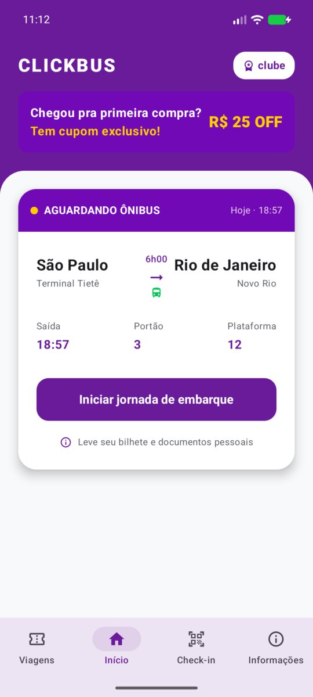
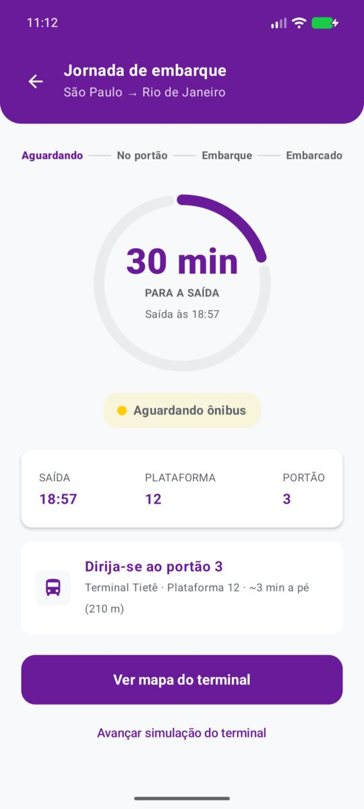
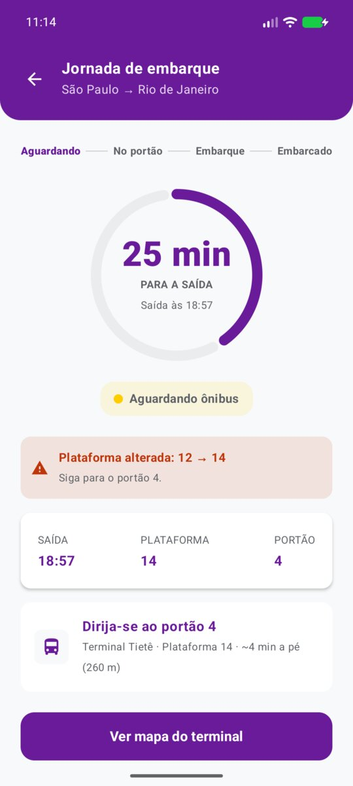
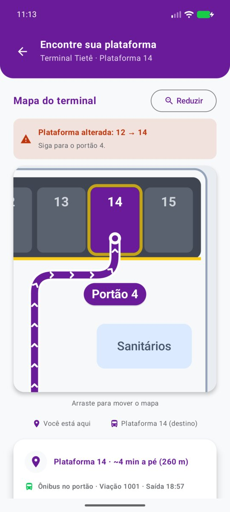
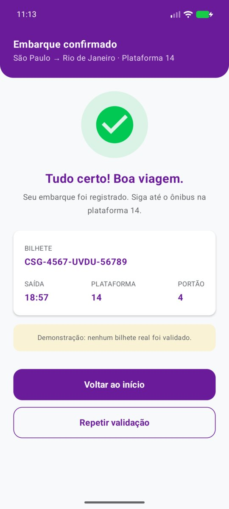

No terminal, o passageiro fica sem resposta
Qual é a minha plataforma?
Mudou e ninguém me avisou.
Para que lado fica o portão?
O Boardly leva o passageiro do bilhete ao portão de embarque e avisa na hora quando o terminal muda a plataforma. Cada quadro mostra o momento principal da cena, parado. O movimento entra na montagem.
1920×1080 · cerca de 2 min (126 s) · 13 cenas · sem voz · trilha instrumentalO pin cai primeiro. É a vinheta que já está pronta, sem mudanças.
saída: fusãoA primeira frase entra e recua. A segunda ocupa a tela, com "painel do terminal" em amarelo.
saída: fusãoAs três dúvidas surgem uma a uma e se aproximam do passageiro no centro. Sem números nem percentuais.
saída: fusãoUm único movimento: a frase do regulamento sobe e fica parada. É a pausa do vídeo.
saída: fusão
O celular sobe pela direita com a tela Início real. As três palavras entram em sequência.
saída: fusão, o celular permanece
Gravação real do app: toque em "Iniciar jornada de embarque" e a tela de Status aparece.
saída: corte dentro do celular

O alerta chega na gravação e sai ampliado do celular para a direita. É o momento central.
saída: corte dentro do celular
Gravação real: o mapa abre, a rota anima, o zoom aproxima e o dedo arrasta o mapa.
saída: corte dentro do celular
Gravação real: o bilhete aparece e a confirmação de embarque fecha a jornada.
saída: fusãoO título sobe; o aviso de simulação entra logo abaixo e fica parado.
saída: fusãoOs três cartões se montam em cascata, da esquerda para a direita. Sem percentuais nem resultados medidos.
saída: fusãoOs quatro itens entram em sequência, na ordem dos números.
saída: fusãoA logo volta e responde à abertura. A linha da equipe só entra se você me passar os nomes.
fim